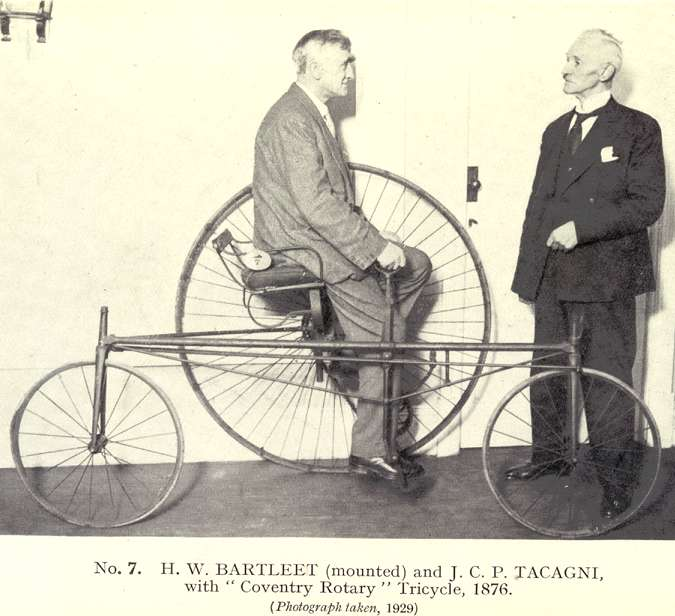
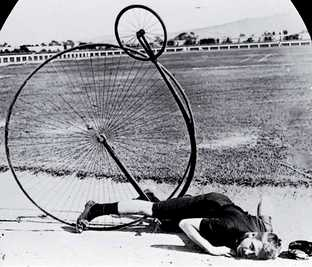

Chapitre 5 - page 1 . 2
[[ Note du Traducteur : Thomas Stevens est le premier cycliste à avoir fait le tour du monde ; par la même occasion il est le premier cycliste à avoir traversé les Etats-Unis d'océan à océan ; ce chapitre 5 relate sa traversée de l'Angleterre et de la France. ]]
Quelques mots du traducteur : ce cinquième chapitre relatant la traversée de l'Angleterre ( de Liverpool à Newhaven) et de la France (de Dieppe à la frontière allemande en passant par Paris) se place essentiellement sous le signe d'une certaine tranquilité. Les paysages et les populations sont charmants, les routes sont remarquablement entretenues, les cyclistes anglais (tricycles et grand-bi - penny-farthing en anglais) accueillent et guident Thomas Stevens lors de son passage ; au bout du compte les seuls soubressauts sont ceux de quelques chevaux français effrayés à la vue de la monture d'acier.
Mais c'est plaisamment écrit et conté et nous ne bouderons pas notre plaisir le long de ce badinage à grand-bi en compagnie de Monsieur Stevens.
De l'Amérique jusqu'à la frontière allemande
A une heure de l'après-midi, ce jour là [[ Ndt : 9 avril 1885 ]], la lourde mais harmonieuse coque du City of Chicago [[ Ndt : vapeur construit à Glasgow en 1883 par le chantier naval Charles Connell and Company - ce chantier naval fut fondé en 1861 et fermé en 1980 ; le City of Chicago faisait 131 mètres de long, 14 mètres de large. Il faisait la navette entre Liverpool et New York ]] avec son fret vivant et plein d'entrain, s'éloigne du quai comme si elle aussi était douée d'autant d'esprit que de matière ; les foules qui, il y a une minute, quittaient le navire par la passerelle sont maintenant rassemblées à l'extrémité de la jetée, masse compacte de mouchoirs ondulants, et de personnes aux visages tendus qui crient des signes de reconnaissance aux amis à bord du vapeur en partance.
Du début à la fin du voyage à travers l'Atlantique, le temps est délicieux ; et les passagers, et bien, la moitié des passagers de cabine sont des membres de la Henry Irving's Lyceum Company en route [[ en français dans le texte ]] vers leur pays après leur deuxième tournée couronnée de succès en Amérique [[ Ndt : il s'agit de la compagnie de théâtre de Henry Irving, acteur et manager du Lyceum Théâtre à Londres où actuait sa compagnie ; cette compagnie était un important représentant du théâtre classique anglais et a fait de nombreuses visites couronnées de succès dans les années 1880, 1890 aux Etats-Unis et au Canada - Source : Wikipedia.org ]] ; quant aux vieux voyageurs originaires de l'étranger qui ont traversé l'Atlantique quantité de fois, ils déclarent que c'est vraiment le plus agréable voyage qu'ils aient jamais fait. Le troisième jour, nous rencontrons un iceberg qui semble solitaire, un objet dont le capitaine semble penser qu'on l'apprécierait mieux et qu'il serait un souvenir peut-être plus affectueusement rappelé, si on le regardait à la distance respectueuse d'environ quatre miles [[ 6,5 kilomètres ]]. C'est un iceberg froid et antipathique, mais très divertissant à sa manière, puisqu'il nous accueille en neutralisant pratiquement tout le surplus calorique de l'atmosphère qui nous entoure, pendant encore des heures après qu'il ait disparu à l'horizon.
Je suis particulièrement chanceux de trouver parmi mes compagnons de voyage Mr. Harry B. French, le voyageur et auteur, dont j'obtiens beaucoup d'informations précieuses, en particulier sur la Chine. M. French a lui-même parcouru quelques régions dans le Royaume Fleuri [[ Ndt : un des surnoms de la Chine, de même que Empire Céleste ; fleuri met en avant l'idée de beauté de culture, de raffinement, céleste l'idée que l'empire chinois a été établi par volonté céleste et que l'empereur est de droit divin - Source : La Chine et les Chinois, de John L. Nevius, 1869 ]], et m'avertit gentiment de prévoir des moments animés et divertissants à m'introduire dans ce pays avec un véhicule aussi étrange et incompréhensible pour la pensée Céleste qu'un bicycle. Ce monsieur expérimenté m'informe, entre autres choses intéressantes, que si cinq cents Célestes chahuteurs défoncent la porte et déferlent à l'improviste à minuit dans l'appartement où je cherche le premier sommeil espéré depuis une semaine entière, au lieu de suivre les inclinations naturelles d'un Anglo-Saxon à défendre énergiquement ses droits avec un bon gourdin, je devrais montrer la sagesse de Salomon en me soumettant tranquillement à l'invasion et en m'inclinant humblement devant la curiosité chinoise. Si, dans une circonstance de cette nature, on se tient derrière la porte, et comme une sorte d'avertissement préliminaire pour les autres, on salue le premier intrus avec la pointe d'un tire-botte, on doit s'attendre à un virulent malentendu unilatéral qui pourrait finir désastreusement pour soi-même ; tandis qu'en se soumettant humblement à un examen critique et exhaustif par la compagnie assemblée, on peut même recevoir des excuses pour la porte défoncée pour satisfaire leur curiosité. Il faut plus de discrétion que de courage pour traiter avec les Chinois.
A midi, le 19, nous arrivons à Liverpool, où je trouve une lettre qui m'attend de A. J. Wilson (Faed) [[ Ndt : l'anglais Arthur James Wilson, 1858- 1945, (dit Faed, surnom qu'il s'est donné, inverse de deaf qui signifie sourd ; importante figure du cyclisme britannique. Cycliste, activiste cycliste, journaliste, il fonda le North London Tricycling Club, le North Road Cycling Club, le Irish Cycling Club, etc... Il devint sourd à l'âge de 12 ans après avoir contracté la scarlatine. Il a été président des Institutions pour les sourds des Comtés des Midland. Sources : https://en.wikipedia.org/wiki/Arthur_James_Wilson | http://blogs.ucl.ac.uk/library-rnid/2012/04/ | http://thepedalclub.org/archives/arthur-wilson/ ]], m'invitant à passer le voir à Powerscroft House, à Londres, et me proposant de me conduire à tandem à travers l'inextricable dédale de rues du West End [[ Ndt : à cette époque le West End à Londres est un lieu de palaces, de grandes propriétés, de boutiques de mode, de théâtres ]] ; et me demandant d'autre part s'il me convient qu'il m'accompagne avec d'autres personnes, de Londres jusqu'à la côte sud ; un programme auquel il n'est pas besoin de le dire je ne soulève aucune objection.
Docks de Liverpool, 1890
Source http://www.20thcenturyimages.co.uk/
Arthur James Wilson - dit Faed
Alors que le douanier arrache une planche de la large boîte plate contenant mon bicycle américain, plusieurs compagnons de voyage se rassemblent autour, poussés par leur curiosité à jeter un coup d'œil à la machine dont ils ont appris qu'elle me transporte partout dans le monde ; une dame sympathique, en apercevant la fourche nickelée qui brille, s'exclame: "Oh, quelle honte qu'ils soient autorisés à arracher les planches! Ils peuvent l'endommager;" mais un simple conseil convainc définitivement le personnel que, en retirant une latte et en jetant un coup d'oeil attentif vers l'extrémité fermée, il aura accompli son devoir envers le gouvernement britannique, aussi fidèlement que si tout avait été mis à nu ; les appréhensions de la dame bien intentionnée quant à un dommage possible sont ainsi heureusement apaisées. Deux heures après avoir touché terre, le bicycle est soigneusement transporté dans les magasins souterrains de la Compagnie de chemin de fer Liverpool et Northwestern Railway Company [[ Ndt : il s'agit vraisemblablement plutôt de la London et North Western Railway ; cette compagnie fut fondée en 1846 de la fusion de la London and Birmingham Railway, Grand Junction Railway (qui avait précédemment fusionné avec la Liverpool and Manchester Railway), et Manchester and Birmingham Railways. Il n'existait pas de Liverpool and Northwestern Railway. Source : The History of the London & North Western Railway, publié en 1914 - https://archive.org/details/cu31924030117307 ]] et, deux heures encore plus tard, je roule rapidement en train vers Londres, à travers des champs soigneusement cultivés, des prairies et des parcs d'un vert si intense qu'on n'en rencontre nulle part ailleurs que dans les îles britanniques, et qui incitent un couple natif d'Amérique, monté dans le même compartiment, et qui visite l'Angleterre pour la première fois, à exprimer son admiration de tout cela dans la langue sans mesure du Yankee authentique quand il est vraiment étonné et ravi.
Express Liverpool- Londres entrant en gare
En arrivant à Londres, je me mets aussitôt à la recherche de Mr. Bolton, un cycliste bien connu, qui a probablement voyagé sur le continent autant que n'importe quel autre cycliste anglais, et à qui je porte une lettre d'introduction. Ensemble, lundi après-midi, nous nous ingérons implacablement dans les sanctuaires des principaux journaux cyclistes de Londres. M. Bolton est également en mesure de me donner quelques conseils utiles concernant le cyclisme à travers la France et l'Allemagne. Puis vient la demande d'un passeport et l'inévitable désagrément d'être soupçonné par chaque policier et chaque détective autour des bâtiments administratifs d'être un dynamiteur désespéré récemment arrivé d'Amérique avec le but terrible de faire sauter toute la place. Mardi, je fais un déplacement administratif à l'ambassade chinoise, pour demander des informations sur la possibilité de suivre un trajet flexueux à travers le Royaume Fleuri via Upper Burmah jusqu'à Hong-Kong ou Shanghai. Ici j'apprends, par le docteur McCarty l'interprète de l'ambassade, et par M. French, que, dit de la manière la moins emphatique possible, je dois m'attendre à des moments extravaguants en m'enfonçant à l'intérieur de la Chine avec un bicycle. Le docteur a la certitude que je dois raisonnablement prévoir la mauvaise plaisanterie de devoir me frayer un chemin dans des régions folles et sauvages au milieu des braillements des célestes sujets d'un bout à l'autre du pays. Le grand danger, pense-t-il, n'est pas tant l'aversion bien connue des Chinois pour le fait qu'un barbare ait pénétré cet espace sacré qu'est leur pays, sinon les foules énormes qui m'entoureront presque constamment par curiosité à la fois du cycliste et du bicycle, et la suffisance morale d'un étranger qui peut aboutir à faire involontairement quelque chose qui offenserait les notions de bienséance particulières et profondément enracinées des Chinois. Ce serait, on le comprend aisément, une attitude singulièrement épineuse, entouré de nattes pendantes [[ Ndt : coiffure traditionnelle en Chine ]] et de blouses bleu ciel dont les porteurs sont dès le départ prédisposés à rendre les choses aussi désagréables que possible. Seule l'expérience, cependant, démontrera le genre d'accueil que je suis susceptible de recevoir chez eux ; et s'ils s'abstiennent seulement par égard de m'empaler sur un bambou, suivant une de leurs coutumes barbares et très spirituelles, je me préoccupe peu quelles autres atrocités ils ont en réserve. Après qu'on ait passé assez de temps dans le monde pour le connaître, on devient généralement moins exigeant quant à l'avenir en général, que dans les jours optimistes de l'adolescence où toutes les attentes étaient enveloppées des perspectives dorées de l'imagerie d'un sujet en herbe et inexpérimenté ; néanmoins, une personne réfléchie, circonspecte, qui comprend la nécessité de fixer une limite quelque part, la fixerait naturellement à l'empalement. Cependant, ne pressentant pas les sensations de l'empalement, la seule chose que je demande aux Chinois, à l'heure actuelle, est de ne placer aucun obstacle insurmontable devant mon intention de poursuivre tranquillement - ou erratiquement comme la chose est possible - mon chemin à travers leur pays. La Chine, de toute façon, est à plusieurs révolutions de ma roue de cinquante pouces loin vers l'est en ce moment précis où j'écris, et les spéculations à son égard sont plutôt prématurées.
Chinois, milieu 19ème siècle
Source http://www.vintag.es/2016/05/rarely-seen-colorized-photos-of.html
Peu après mon arrivée à Londres, j'ai le plaisir de rencontrer «Faed», ce gentleman qui porte son enthousiasme du vélo presque là où l'on dit que certaines personnes transportent leurs cœurs : dans ses manches [[ Ndt : le texte en anglais dit 'to carry their hearts... on his sleeves. L'expression 'to carry - ou, to wear - one's heart on one's sleeves signifie littéralement porter son coeur dans ses manches ; cette expression signifie en fait 'parler à coeur ouvert, exprimer sans retenue opinion, sentiment, idée' ]] ; de sorte qu'il n'est pas nécessaire de faire connaissance très longtemps pour être convaincu qu'on se trouve en compagnie d'une personne dont l'intérêt pour celui qui roule [[ Ndt : dans le texte original Stevens dit 'whirling wheels', et désigne par cette expression le bicycle, mais délibérément il n'emploie pas le mot bicycle mais une expression destinée à faire ressortir l'intérêt hors du commun de son compagnon pour le bicycle qui acquiert en l'occurence une 'personnalité' peu commune ; wheel en anglais désigne la roue, et aussi le bicycle, Stevens emploie d'ailleurs à plusieurs reprises le mot wheel (ou high wheel, littéralement grande roue) dans le texte original ; whirling signifie qui tournoie, qui tourbillonne, qui tourne, qui circonvolutionne... Littéralement on pourrait traduire 'whirling wheel' par le véhicule aux roues tournoyantes, le véhicule aux roues tourbillonantes.
j'ai traduit par 'celui qui roule' qui est une expression d'Alfred Jarry pour désigner la bicyclette dont il était un fervent adepte, et qui date sans doute des années 1890 ; cette expression d'Alfred Jarry - même si elle est postérieure au texte de Stevens - me semble être la traduction appropriée pour rendre ce que voulait exprimer Thomas Stevens quand il a employé l'expression whirling wheels. Anectodiquement poursuivant, au sujet des préoccupations d'empalement de Stevens, on signalera que dans une des oeuvres théatrales de Jarry, Ubu Cocu (1897 ?), ce sujet est d'une certaine importance, et qu'il figure également dans un texte de Jarry de 1894 publié dans la revue l'Art Littéraire : Visions actuelles et futures. Enfin, puisqu'on parle théâtre, rappelons qu'après être rentré s'établir en Angleterre, Stevens fut pendant plusieurs années directeur du théâtre Garrick à Londres. Sources : https://fr.wikipedia.org/wiki/Alfred_Jarry | https://goo.gl/2Eln38 | https://ebooks-bnr.com/ebooks/pdf4/jarry_ubu_cocu.pdf | http://claude.ognois.pagesperso-orange.fr/ubu02.htm ]] est d'une nature peu commune. Quand je me présente à Powerscroft House, Faed est occupé à se promener parmi les courbes et les angles de pas moins de trois tricycles, essayant apparemment dans un grand effort exhaustif de l'esprit de comprendre leurs mécanismes compliqués, et la présence de tant de caisses de tricycles autour de nous rend les lieux si suggestifs d'une florissante agence commerciale de tricycles qu'un vieux monsieur, se trouvant à passer là à cet instant, est vraiment tout à fait excusable de s'arrêter et de demander les prix, en vue d'en acheter un pour lui-même. Notre promenade à tandem à travers le West End doit être reportée sine die, en raison du temps limité dont je dispose et notre incapacité à nous procurer facilement une machine appropriée ; et vu le remarquable jugement de M. Wilson il ne lui viendrait pas à l'idée de me permettre de tenter l'exploit de manœuvrer moi-même un tricycle au milieu du trafic déroutant de la métropole [[ Ndt : la conduite d'un tricycle est déroutante pour quelqu'un qui n'y est pas habitué ]], et de risquer de conduire mon «bicycle autour du monde» à une conclusion sans gloire à peine après avoir commencé. Tout en marchant dans la rue du Parlement, mon attention est attirée par un gentilhomme de vénérable allure qui roule à bonne vitesse parmi l'affluence de véhicules de toute sorte, et je suis informé que ce tricycliste audacieux n'est autre que le major Knox Holmes [[ Ndt : homme aux multiples talents, le major Thomas Knox Holmes, né en 1808, était le fils d'un politicien, politicien lui-même, cotoyait la cour royale, acteur, chanteur, sportif. Entré dans l'armée en 1825, il y resta pendant 48 ans. Puis il entra en politique, en tant qu'acteur joua au Théâtre Royal de Brighton, était un boxeur talentueux, un cavalier. En 1891 il fit partie des soutiens de l'anglais George Pilkington Mills, lors du premier Bordeaux-Paris gagné par ce même Mills sur cycle Humber (On peut voir Thomas Knox Holmes en photo sur la page 22 de ce document du Anfield Bicycle Club : http://anfieldbc.co.uk/ecirc_201306.pdf). Il fut surnommé le "Roi des Cyclistes" en 1892 après avoir parcouru cette même année la distance de 3120 miles - 5020 kilomètres - à bicyclette. Il décéda le 12 juillet 1893 à l'âge de 85 ans. En 1887 il avait été directeur du fabricant de cycle Humber and Company. Sources : The Sketch du 19 juillet 1893, journal anglais qui se focalisait sur la haute société et l'aristocratie | http://www.gracesguide.co.uk/Humber | https://www.flickr.com/photos/maggiejones/6124936172 ]], un jeune homme vigoureux de quelque soixante-dix-huit printemps, qui a récemment accompli l'exploit de faire cent-quatorze miles [[ 183 kilomètres ]] en dix heures ;
Thomas Knox Holmes
Source : The Sketch du 19 juillet 1893
Thomas Knox Holmes, en 1891
Pour une personne de près de quatre-vingts ans, c'est vraiment une performance prometteuse, et il y a peu de doute que lorsque le vaillant Major sera un peu plus vieux - disons lorsqu'il sera centenaire - il se convertira en un véritable prodige de la piste cendrée!
Ayant obtenu mon passeport, et l'ayant fait viser par les représentants de l'autorité du sultan au consulat turc, je charge Faed de conserver un paquet de cartes qu'il s'offre généreusement à me faire parvenir, vu que j'en aurai besoin dans les divers pays que je me propose propose de traverser. Je retourne le 30 avril à Liverpool, endroit à partir duquel j'ai prévu de prendre le départ formel à bicycle à travers l'Angleterre. L'heure annoncée sont les quatre heures de l'après-midi du 2 mai, et le lieu convenu est Edge Hill Church [[ l'église de Edge Hill ]], où M. Lawrence Fletcher, du club de vélo d'Anfield [[ Ndt : Anfield est un district de Liverpool ; Le Anfield Bicycle Club, fondé en 1879, est un des plus anciens club cyclistes du monde. Source : http://www.anfieldbc.co.uk/archive.html ]], et un certain nombre d'autres cyclistes routiers de Liverpool, ont offert de se retrouver et de m'accompagner sur une partie du trajet hors de la ville.
Edge Hill Church en 1890
Source : https://twitter.com/YOLiverpool
Plusieurs des quotidiens de Liverpool ont fait mention de l'affaire. Donc, en arrivant au lieu et à l'heure fixés, je trouve une foule de plusieurs centaines de personnes rassemblées pour satisfaire leur curiosité quant à quelle sorte d'individu singulier a traversé l'Amérique à bicycle, et se propose en outre d'accomplir le plus grand exploit encore de la circonvolution du globe. Une petite mer de chapeaux sont agités avec enthousiasme ; un tonnerre d'ovations s'échappe de cinq cents gorges anglaises alors que je monte sur mon bicycle étincelant ; avec l'assistance de quelques policiers, les vingt-cinq cyclistes de Liverpool qui se sont assemblés pour m'accompagner, se dégagent de la foule, montent en selle et s'alignent de front deux par deux ; et en roulant joyeusement nous nous éloignons par Edge Lane et sortons de Liverpool.
Edge Lane
En Angleterre le temps en cette saison est notoirement capricieux, cette année tout particulièrement, et avant même que le départ soit vraiment donné nous sommes en train de pédaler sous une pluie torrentielle, qui, cependant, n'a pas suffisamment d'effet sur les routes au point de causer des projections de boue. La plupart de mes accompagnateurs sont des membres du Anfield Club [[ Ndt : voir note précédente ]], qui ont la réputation enviable d'être parmi les routiers les plus déterminés d'Angleterre, plusieurs membres ayant accompli plus de deux cents miles [[ 321 kilomètres ]] en vingt-quatre heures ; on m'informe que M. Fletcher va bientôt entreprendre la tâche de battre le record à tricycle sur cette route déjà bien disputée, de John O'Groat à Land's End [[ Ndt : Lawrence Fletcher (1861-1933) était un cycliste renommé, membre du Anfield Bicycle Club, reconnu comme un des personnages clé du développement des compétitons cyclistes sur route en Angleterre. Il était le cinquième de huit enfants, et la famille vivait à Liverpool, sur Edge Lane où roule justement en ce moment Stevens et ses accompagnateurs. En 1885, de la fin mai au 2 juin, en 8 jours 5 heures et 20 minutes Fletcher battit le record à tricycle de Land's End à John O'Groats (extrême sud à extrême nord de Grande-Bretagne, 1408 kilomètres). En 1887 il sera à la tête de la 'Fletcher and Fraser', une entreprise qui faisait le commerce de l'or et du caoutchouc avec l'Afrique. Source : https://goo.gl/vSSgb4 ]].
Lawrence Fletcher (1893 ?)
Source : http://cyclingnorthwales.co.uk
Seize miles plus loin, je reçois avec bonheur de chaleureux souhaits de réussite, avec les poignées de main qui vont avec, et mes chaperons retournent à la maison à Liverpool, sauf quatre, qui roulent jusqu'à Warrington et restent la nuit, avec l'intention avouée de m'accompagner encore sur vingt-cinq miles demain matin.
Warrington, vers milieu du 19ème siècle
Nos épreuves du dimanche matin commencent par une averse, qui, cependant, est de bon augure pour le reste de la journée ; et, à l'exception d'un faible vent de face, il ne se fait entendre aucun reproche sur cet individu si critiqué : le commis au temps ; surtout que notre route mène à travers un pays prolifique de tout ce qui séduit notre sens du beau. En outre, nous sommes ce matin à rouler exactement sur l'axe routier qui, les jours d'antan, faisait partie des promenades favorites d'un personnage éminent et audacieux connu de toute la jeunesse britannique comme Dick Turpin [[ Ndt : Richard Dick Turpin, 1705-1739, bandit de grand chemim anglais, qui après son exécution a été représenté comme un personnage héroïque et est une figure du folklore anglais moderne. Source https://fr.wikipedia.org/wiki/Dick_Turpin ]] ; une personne qui a acquis une renommée impérissable et l'affection éternelle des petits britanniques d'aujourd'hui, en rendant ce secteur dangereux pour les diligences et les voyageurs assez imprudents pour porter des objets de valeur sur eux.
«Pensez-vous que je trouverai des routes comme celle-ci dans toute l'Angleterre ?» demandé-je à mes compagnons pendant que nous roulons joyeusement vers le sud le long de routes lisses et macadamisées qui rendraient en comparaison les «routes comme lissées avec du papier de verre» autour de Boston presque inaptes au cyclisme, et qui mènent à travers des villages pittoresques et des parcs majestueux ; apercevant à l'occasion un somptueux manoir ancien parmi des arbres vénérables, qui fait inconsciemment commencer à murmurer :
"The Ancient Homes of England,
How beautiful they stand
Amidst the tall ancestral trees
O'er all the pleasant land!"
Ma traduction sans prétention poétique
Les anciennes demeures d'Angleterre,
Comme elles sont belles
Au milieu des grands arbres ancestraux
Partout dans ce charmant pays
[[ Ndt : il s'agit des quatre premiers vers de la première strophe du poème The Homes of England de la poétesse anglaise Felicia Dorothea Hemans (1793 à Liverpool - 1835 à Dublin), qui fut une des poétesses les plus lues de son temps dans le monde anglophone. Sources : The Homes of England, poème complet http://www.poemhunter.com/poem/the-homes-of-england/ | Felicia Hemans, https://en.wikipedia.org/wiki/Felicia_Hemans ]]
"Oh, vous trouverez de bien meilleures routes que celles-ci dans les comtés du sud," me répond-on ; cependant, tout juste arrivant des routes américaines, je peux à peine imaginer comment on pourrait encore améliorer ces routes. Toujours en roulant nous passons du comté de Lancashire au comté de Cheshire, et mon escorte, après m'avoir souhaité le meilleur avenir possible, dans le style chaleureux du Lancashire, appuie sur les pédales se hâtant de retourner vers le grondement et le rugissement du plus grand port maritime du monde, me laissant à mon agréable pédalée vers le sud le long des chemins verdoyants et au milieu du paisible paysage rural du comté de Staffordshire jusqu'à Stone, où je passe la nuit du dimanche. [[ Stone se trouve dans la vallée de la rivière Trent, qui traverse la ville. C'était un point de passage des diligences, transports de marchandises, de voyageurs et de ce fait proposait de nombreuses auberges et commodités pour voyageurs et chevaux. Du fait de la qualité de l'eau, deux brasseries étaient établies dans la ville. Source https://en.wikipedia.org/wiki/Stone,_Staffordshire.]]
La région reçoit une autre averse torrentielle pendant la nuit, et l'arrosage se poursuit sans relâche durant de courts et imprévisibles intervalles le lundi matin, pendant que j'avance vers Birmingham. En dépit de l'humidité surabondante la pédalée du matin est un moment des plus agréables, seul manque un rayon de soleil pour que tout soit parfait. La voix assourdie du coucou s'entend à travers divers points d'un bosquet vert émeraude ; des chanteurs qui habitent seulement les haies et les bois verdoyants de "Merrie England" [[ Ndt : on pourrait traduire Merrie England par Angleterre heureuse, ou plutôt peut-être 'Heureuse Angleterre' ; il s'agit plus exactement d'un concept qui daterait du Moyen-Âge, et qui se réfère à une conception de la culture et de la société anglaises basées sur un mode de vie pastorale idyllique, des connotations telles que le pub, le toit de chaume, le roti du dimanche. Sous l'époque victorienne (1837-1901) ce concept incluait également des élements d'une nature mythologique, lutins, fées, elfes, Robin des Bois... Source https://en.wikipedia.org/wiki/Merry_England ]] chantent leurs laudes [[ office religieux de l'aurore ]] dans toutes les directions ; des alouettes des champs planent et planent dans le ciel, gazouillant leurs incessants chants de louange pendant qu'elles s'élèvent progressivement vers le royaume éthéré des nuages ; et de temps en temps je roule sous une voûte de hêtres aux frondaisons étalées qui sont colonisés par des foules de corbeaux bruyants «croassant» sans cesse leur approbation ou leur désapprobation des choses en général. Sûrement que l'Angleterre, avec ses routes presque parfaites, l'exceptionnelle profusion de sa végétation et ses voitures à cheval qui croisent et considèrent leurs rivaux à carcasse d'acier avec une suprême indifférence, est le paradis naturel des cyclistes. Sur ces routes heureuses il ne se produit pas de ces désagréables chutes dues à des chevaux effrayés, car le cheval anglais, bien que vif et plein de feu, a depuis longtemps accepté l'inévitable, et soit a fait ami avec le cycliste et son étalon rapide comme l'oiseau [[ Ndt : dans le texte anglais, Stevens écrit 'swift-winged steed' qui se traduirait par l'étalon au vol rapide ; il s'agit sans doute d'une allusion à Pégase, l'étalon ailé de la mythologie grecque https://fr.wikipedia.org/wiki/P%C3%A9gase. En 1898, Maurice Leblanc publiera un court roman, ode à l'amour et à la bicyclette intitulé : Voici des Ailes. https://ebooks-bnr.com/ebooks/pdf4/leblanc_voici_des_ailes.pdf ]], ou ce qui est aussi satisfaisant, maintient une réserve hautaine. En allant tranquillement de l'avant, entre les averses, dans le comté de Warwickshire, j'arrive à Birmingham [[ Ndt : environ 400.000 habitants lors du passage de Stevens. le développement et la prospérité de Birmingham reposaient sur l'industrie métallurgique ; comme à Coventry et à Nottingham, la production de masse avait été appliquée à l'industrie textile, les machines à coudre, les armes, les horloges, les montres. Elle s'est donc naturellement appliquée à la prometteuse industrie du cycle vers laquelle se sont tournés ces mêmes industriels ( Starley, à Coventry produisait des grands-bi en même temps que des machines à coudre ). Suite à l'introduction en 1876 par James Starley de son Coventry Lever Tricycle (un tricycle à propulsion par leviers actionnés par les pieds), suivi la même année par le Coventry Rotary Tricycle produit par la Tangent and Coventry Tricycle Company (un tricycle à propulsion par pédales et chaîne), il y eut un véritable engouement en Grande-Bretagne pour le tricycle ; En 1884 il y avait en Angleterre 20 constructeurs proposant 120 modèles de tricycles. En 1900, Birmingham comptait le plus grand nombre de fabricants de cycles et d'accessoires pour cycles du Royaume-Uni. Source https://oldbike.wordpress.com/8-bicycles-manufactured-in-birmingham/ | https://oldbike.wordpress.com/page-3-history-of-tricycles/ | http://www.gracesguide.co.uk/Tangent_and_Coventry_Tricycle_Co En France aussi des fabricants de machines à coudre se sont lancés dans la fabrication de cycles, par exemple Peugeot, dans le Doubs, Hurtu, à Albert dans la Somme. Sources https://goo.gl/Jv1qXC | http://patrimoine-archives.psa-peugeot-citroen.com/articles/200-ans-dhistoire/ | https://en.wikipedia.org/wiki/Hurtu ]]
Lever Tricycle
Source http://www.cyclingnorthwales.co.uk/pages/wayfarer.htm
Rotary Tricycle

vers trois heures, et après avoir passé une heure à visiter quelques fabriques de tricycles et avoir commandé un écritoire en cuir qu'ils fabriquent spécialement pour mon voyage, je roule vers Coventry accompagné par M. Priest Junior [[ Ndt : certainement William Alexander Priest, fils de William Priest. William Priest était, avec Walter John Lloyd le proptiétaire de la Quadrant Tricycle Company, fondée en 1883 à Birmingham. Il était père de deux fils, Henry G. Priest et William A. Priest. Source http://www.gracesguide.co.uk/Quadrant_Cycle_Co ]] des fabriques de tricycles, jusqu'à Stonehouse.
Tricycle Quadrant de 1886
Entre Birmingham et Coventry, les précipitations récentes ont été manifestement moins importantes, et je me fais la remarque que cette route de quinze miles est la plus belle parcourue depuis la sortie de Liverpool, à la fois pour sa largeur et pour la douceur de son revêtement, qui en font un véritable boulevard [[ en français dans le texte ]]. En arrivant à Coventry [[ Ndt : environ 50.000 habitants lors du passage de Stevens ]], je fais appel aux services de "Brother Sturmey" [[ Ndt : il s'agit de Henry Sturmey (1857-1930) ; auteur et promoteur du cycle et de l'automobile, conseiller principal du Cyclists Touring Club, auteur du Bicyclist's Handbook, a breveté en 1901 un moyeux à 3 vitesses similaire au fameux moyeu qui sera commercialisé sous le nom de Sturmey-Archer par Frank Bowden le fondateur de Raleigh Cycle Co - lequel moyeu Sturmey-Archer était en fait surtout une création du mécanicien William Reilly - Source : http://www.gracesguide.co.uk/Henry_Sturmey | https://en.wikipedia.org/wiki/Henry_Sturmey http://www.gracesguide.co.uk/Frank_Bowden | http://www.gracesguide.co.uk/Three-Speed_Gear_Syndicate | http://www.gracesguide.co.uk/William_Reilly ]], un monsieur au renom partout estimé chez les lecteurs de littérature cycliste ; et, comme je considère largement mériter être traité avec complaisance pour être allé de l'avant au mépris de la pluie pendant soixante miles, je lui demande de me conduire à l'hôtel du Cyclist's Touring Club, une tâche dont il s'acquitte avec le sourire, avec force recommandation au propriétaire de me traiter avec autant d'attention que possible. Je suis guidé pour une visite rapide de Coventry, et visite, entre autres sites d'intérêt, le Starley Memorial [[ Ndt : monument érigé en mémoire de James Starley (1830-1881), inventeur anglais, considéré comme le père de l'industrie du cycle en Angleterre ; fabricant de machines à coudre dont il inventa plusieurs perfectionnements, il fabriqua aussi des grands-bi - il fut même longtemps considéré comme son inventeur, il présenta en 1870 l'Ariel, un grand-bi entièrement en acier équipé de roues avec un rayonnage moderne de son invention. En 1876 il développa un des premiers tricycles, et en 1877 inventa le différentiel pour les tricycles - et contribua à leur modernisation. Le monument que visite Stevens a été érigé en 1884. Source http://www.gracesguide.co.uk/James_Starley | http://www.sewalot.com/starley_sewing_machines.htm ]]. Ce mémorial souligne l'intérêt porté aux cyclistes, puisqu'il a été érigé grâce à une souscription publique en reconnaissance du grand apport de M. Starley à l'industrie du cycle, lequel a été de fait à l'origine de cette activité à Coventry et, par conséquent, auteur direct de la prospérité actuelle de la ville. [[ Ndt : à la fin du 19ème siècle Coventry était une des principaux centres de production de cycles, notamment grâce aux inventions de James Starley, puis de son neveu John Kemp Starley, qui conçut la bicyclette Rover, ancêtre direct de la bicyclette moderne. ]]
Henry Sturmey
James Starley
Starley Memorial - photo de 1884
L'Ariel
Prospectus présentant l'Ariel
L'esprit des petits garçons britanniques le long de ma route est frappé au plus haut point par mon casque militaire blanc, et en conséquence divers et intéressants commentaires se font entendre en passant. L'impression générale semble être que j'arrive directement du Soudan, certains jeunes Conservateurs insinuent avec indifférence que je suis l'avant-garde d'une fuite précipitée de l'armée d'Égypte, et que bientôt tous les régiments de cyclistes à casques blancs arriveront bride abattue sur des destriers nickelés, certains allant même jusqu'à me faire l'honneur de m'appeler Général Wolseley [[ Ndt : Adjoint de l'adjudant-général commandant l'expédition du Nil en 1884, chargée de relever le major général Charles Gordon a Karthoum (Soudan), mais qui arriva 2 jours trop tard en janvier 1885. ]] ; tandis que d'autres - de jeunes libéraux montants, vraisemblablement - me donnent avec audace du Général Gordon, laissant entendre que le héros de Khartoum n'a pas été tué, et le prouve en traversant l'Angleterre en trombe à bicycle, portant un casque blanc pour prouver son identité!
Un trajet agréable le long d'une route splendide, ombragée pendant des miles par des rangées d'ormes déployés, m'amène au charmant et vieux village de Dunchurch [[ Ndt : village du comté de Warwickshire (comté du centre de l'Angleterre) ]], où tout semble vénérable et se recouvrir de mousse. Une tour d'église trapue, ressemblant à celle d'un château, qui a résisté au poids de nombre de siècles, couvre d'un air renfrogné un groupe de maisons pittoresques d'architecture primitive aux toits de chaume et recouvertes de lierre de bas en haut ; tandis que, pour compléter le tableau, il subsiste même les vieux piloris de bois, à travers lesquels les pieds des infortunés ivrognes étaient, selon la coutume, enserrés sans cérémonie aux bons vieux temps de la brutale innocence ; en fait, le seul édifice de l'endroit qui ne soit pas archaïque semble être la chapelle méthodiste nouvellement érigée. Il ne se peut pas, non bien sûr, il ne peut pas être possible, qu'il y ait un lien entre la bizarrerie américaine de poser les pieds sur le seuil de la fenêtre ou la table de cuisson de la cuisinière qui sert aussi de chauffage et cette ancienne coutume d'éléver les pieds de ceux de nos ancêtres possédés par cette inclination pleine d'humour qu'est l'ivrognerie !
Au camp de Weedon [[ Ndt : camp militaire construit en 1803 et qui servait de dépôt pour armes de petit calibre. La plupart des bâtiments ont été détruits dans les années 1960. Source https://goo.gl/1c1K4O ]], je fais un bref arrêt pour regarder les soldats pratiquer les exercices à la baïonnette et me résous à écluser à la cantine une chope d'une bière brune délicieuse et crémeuse en compagnie d'un vieux sergent sympathique, un vétéran bronzé qui a été en service actif dans plusieurs des expéditions difficiles que l'Angleterre semble toujours encline à entreprendre dans divers coins non civilisés du monde ; après quoi je poursuis ma route sur les anciennes voies militaires romaines, à travers le Northamptonshire et le Buckinghamshire, atteignant Fenny Stratford [[ Ndt : c'est a Fenny Stafford qu'ont été conçus et fabriqués en 1886 les premiers prototypes du moteur au kérosène à boule chaude - ancêtre du moteur diesel - par Herbert Akroyd Stuart. Source http://www.enginemuseum.org/eoe.html | https://en.wikipedia.org/wiki/Fenny_Stratford ]] juste à temps pour trouver un abri contre les machinations du gestionnaire du temps qu'il fait, qui après avoir retenu la pluie presque toute l'après-midi, commence à la dispenser à nouveau au crépuscule.
Weedon Barracks (Camp de Weedon, vers 1910)
Il pleut sans interruption toute la nuit ; mais, bien que sur quelques miles mon trajet passe par des chemins, la pluie ne les a rendus que peu engageants, sans les rendre pour autant impraticables ; et bien que je me trouve au milieu des pentes des collines de Chiltern, je n'ai quasiment qu'une fois à mettre pied à terre au cours de la matinée. Après avoir passé la nuit à Berkhamstead [[ Ndt : lieu de naissance de Thomas Stevens ; voir sa biographie sur notre page Biographie de Thomas Stevens. Etonnant qu'il ne le mentionne pas. ]], Hertfordshire, je pousse vers Londres le jeudi matin, et à proximité de Watford j'ai la grande satisfaction de rencontrer Faed et le capitaine du North London Tricycle Club, qui sont venus de Londres sur leurs tricycles pour me rejoindre et m'escorter dans la métropole. Sur les conseils de Faed je décide de rester à Londres jusqu'au samedi, pour assister à la rencontre annuelle de tricycles à Barnes Common [[ Ndt : Barnes Common est un pré communal depuis plus de mille ans, d'environ 48 hectares, à Londres (Grand Londres). Source http://barnescommon.org.uk ]], et de concert nous descendons Edgewere Road, Park Road, Picadilly parmi les toilettes à la mode, passons Knightsbridge et Brompton jusqu'à l'Exposition des «Articles», où nous passons une après-midi des plus agréables à détailler les mille et une preuves matérielles du génie inventif des différents pays représentés.
Barnes Common
Cinq cent vingt cyclistes, y compris quarante et un tandems tricycles et cinquante dames roulent en cortège lors de cette rencontre à Barnes Common, ce qui constitue un déploiement particulièrement imposant vu qu'ils roulent à deux de front entre les rangées de spectateurs enthousiastes. Ici, parmi une kyrielle d'autres célébrités du cycle, je suis présenté au Major Knox Holmes, auquel j'ai fait précédemment allusion comme un gentleman d'une extraordinaire endurance, considérant son âge avancé. Après le thé plusieurs tricyclistes m'accompagnent jusqu'à Croydon, où nous nous retrouvons sous le crépitement d'une pluie torrentielle, vivant le bonheur d'être trempé jusqu'aux os et etc... Le temps menaçant le matin suivant fait hésiter une partie de mes compagnons à s'aventurer encore plus loin de Londres ; mais Faed et trois compagnons roulent avec moi vers Brighton sous une légère averse matinale, qui bientôt cependant se dissipe, et, avant longtemps, la combinaison des superbes routes du Sussex, d'un temps agréable légèrement venteux, et d'un paysage enchanteur compensent amplement les désagréments de la soirée d'hier. A quatorze miles de Brighton huit membres du Kempton Rangers Bicycle Club viennent à notre rencontre, ils sont montés vers le nord pour nous escorter en ville ; ce qu'ayant fait, ils nous livrent à Mr. C..., du Brighton Tricycle Club et beau-frère du maire de la ville [[ Ndt : le maire de Brighton était Edward Reeves. Source brighton-hove.co.uk https://goo.gl/afWiUt ]]. Il est deux heures de l'après-midi. Ce gentilhomme emporte aussitôt l'affection de notre groupe, et gagne notre éternelle gratitude en nous offrant un authentique repas de cycliste, après quoi il se montre encore plus obligeant en nous faisant visiter autant que faire ce peut les sites renommés de Brighton accessibles le dimanche, en tête desquels se trouve le fameux Aquarium de Brighton [[ Ndt : idée originale et oeuvre de Eugenius Birch - architecte renommé de jetées et de pontons - après une visite à l'aquarium de Boulogne (France). Inauguré le 10 août 1872, l'aquarium de Brighton jouit aussitôt de l'engouement du public ; c'était un bâtiment victorien spectaculaire, avec voûtes, colonnades, entrée immense, restaurant, café, fumoir, bibliothèque, jardin en terrasse, piste de patin à roulettes (rappelons que les patins à roulettes sous leur forme actuelle ont été inventés en 1863 et que dès 1884 ils étaient équipés de roulement à billes), jardin d'hiver avec rocailles et cascade, concerts et récitals etc... Tout celà existait lors de la visite de Stevens, qui ne juge pas utile d'en dire un mot ; dommage, on aurait apprécié ses impressions sur le site. L'aquarium de Brighton fut largement remodelé en 1927. Source https://goo.gl/WAoaxz ]], où, grâce à son influence, il fait que les oiseaux-plongeurs [[ Ndt : oiseaux qui plongent dans l'eau pour attrapper les poissons ou autre nourriture ; par exemple les cormorans, les grèbes, les pingouins. Source https://en.wikipedia.org/wiki/Diving_bird ]] et les phoques soient nourris avant leur heure habituelle, une attention spéciale pour notre ravissement ; une procédure qui provoque naturellement une hausse de plusieurs crans du baromètre de notre auto-estime au dessus du niveau habituel , et donne sans aucun doute égale satisfaction aux phoques et aux oiseaux-plongeurs.
Aquarium de Brighton, entre 1880 et 1890
Source wikipedia.org
Nous nous attardons à l'aquarium jusqu'au coucher du soleil, et sous sommes à quinze miles de Newhaven par ce qui est considéré comme la meilleure route. Mr. C... fait part de son intention de revêtir son costume cycliste et, en prenant une route plus courte, mais considérée plus difficile, atteindre Newhaven en même temps que nous. Vu que nous faisons halte à Lewes pour le thé, que nous nous soumettons à la requête d'être photographié en route, et que nous roulons tranquillement, il arrive en fait avant nous.
une rue de Lewes vers 1874
Source http://www.photohistory-sussex.co.uk
Une rue de Newhaven, début du 20ème siècle
Source http://pubshistory.com
C'est dimanche soir, 10 mai, et mon passage à travers "Merrie England" [[ Ndt : L'Heureuse Angleterre ; comme précisé dans une note antérieure, Merrie England renvoie à une vision pastorale et féérique de l'Angleterre ]] est terminé. Parmi les choses agréables à jamais dans mon souvenir à cette occasion, c'est le fait que ce sont les trois cents premiers miles de route que je me souviens avoir parcourus sans faire un tête en avant, un fait peut-être encore plus impressionnant en lui-même si on le met en relation avec la fermeté de la route anglaise moyenne.
Une chute tête en avant (header en anglais)
commune dans la pratique du grand-bi

Ce n'est pas une mésaventure très sérieuse de voler tête en avant dans un lit de sable mou sur une route de campagne américaine ; mais la perspective de déterrer une pierre en silex avec mon nez, ou de percuter une bordure de trottoir par un défaut de prudence, est une affaire tout à fait différente ; par conséquent, la bonne qualité de l'ensemble des routes anglaise est appréciée à sa juste valeur par au moins un cycliste dont l'expérience des routes est rien de moins que variée. Des quartiers confortables m'ont été assignés à bord du vapeur qui fait la traversée de la Manche, et quelques minutes après avoir fait mes adieux aux amis et à L'Angleterre, à Newhaven, à 23h30, le mouvement du navire m'enfonce doucement dans le sommeil et avec bonheur je demeure paisiblement oublieux de ce qui m'entoure jusqu'à ce que je sois réveillé le lendemain matin à Dieppe [[ Ndt ; port de Seine-Maritime, situé dans la vallée de l'Arques ; environ 23000 habitants lors du passage de Stevens ]], me retrouvant, en quelques minutes, sur une terre étrangère. Pendant tout le parcours de San Francisco à Newhaven, il y avait la sensation d'être pratiquement dans un seul pays et parmi un seul peuple qui, bien que connaissant des gouvernements distincts, sont liés si fermement ensemble par les liens d'instincts et d'intérêts communs, et la confrérie mystique d'une langue commune et une civilisation commune, que rien de sérieux ne peut venir les séparer. Mais maintenant, je suis vraiment parmi des inconnus, et la première chose dont on parle est de me faire payer un droit de douane sur le bicycle.
Le capitaine du navire, aux soins de qui Mr. ...C m'a confié à Newhaven, proteste en mon nom, et je soulève pareillement une protestation affable ; mais l'agent de la douane déclare que le droit de douane est une obligation légale, disant que le montant sera remboursé lorsque je franchirai la frontière allemande. Le capitaine conseille en fin de compte de payer la taxe en échange d'un reçu de son montant et prend congé. Je ne suis pas satisfait encore au point de payer ce droit et je vais faire un petit tour à Dieppe, laissant mon bicycle à la douane ; quand je reviens peu de temps plus tard, prêt à payer la somme due, quelle qu'elle soit, l'agent qui, il y a moins de trente minutes, insistait avec emphase sur l'obligation de payer le droit de douane, répond maintenant, avec toute la politesse imaginable: «Monsieur est libre de prendre le vélocipède et d'aller partout où il voudra.» C'est une initiation plutôt rapide à l'inconstance du personnage français. Cependant, sur les vapeurs de la Manche, ils n'acceptent pas les vélos en tant que bagages, et je dois concéder six shillings de frais de marchandise, en plus du prix passager.
Page précédente - Page suivante
ADMINISTRATIVIA
Dernière mise à jour de cette page : 05 juin 2017
URL : http://orkic.github.io/bicygonzo/atwoab/chap5/index.html
Contactez-nous : Contact
Website © Copyright - ef. Bicy Gonzo.